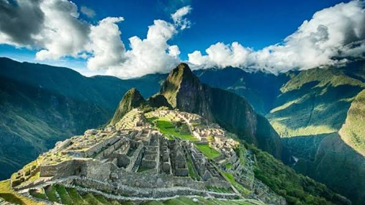
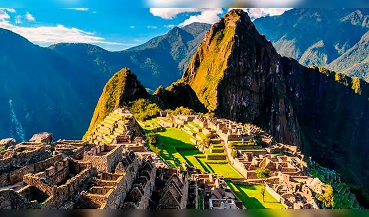

Machu Picchu es una ciudadela inca ubicada en las alturas de las montañas de los Andes en Perú, sobre el valle del río Urubamba. Se construyó en el siglo XV y luego fue abandonada, y es famosa por sus sofisticadas paredes de piedra seca que combinan enormes bloques sin el uso de un mortero, los edificios fascinantes que se relacionan con las alineaciones astronómicas y sus vistas panorámicas. El uso exacto que tuvo sigue siendo un misterio.

Ubicada a 2.438 metros sobre el nivel del mar, la ciudadela destaca por su técnica de "piedra seca" (ashlar), donde los bloques encajan con precisión milimétrica sin usar mortero, lo que permite que los muros "bailen" y resistan los terremotos. El complejo está dividido en una zona agrícola con terrazas escalonadas y una zona urbana donde sobresalen templos sagrados alineados astronómicamente, como el Templo del Sol y la enigmática piedra Intihuatana. Además, cerca del 60% de la construcción total se encuentra bajo tierra, conformando un sofisticado sistema de drenaje y canales de agua que evitan los deslizamientos por lluvias.

Hoy en día, Machu Picchu es Patrimonio de la Humanidad por la Unesco y una de las Siete Maravillas del Mundo Moderno. Para mitigar el desgaste provocado por el turismo masivo y proteger el suelo de la ciudadela, el gobierno peruano ha implementado estrictos controles de acceso. Actualmente se gestionan aforos diarios estrictos, horarios fijos y circuitos de un solo sentido obligatorios, equilibrando la inmensa demanda de viajeros internacionales con la supervivencia estructural del monumento.
